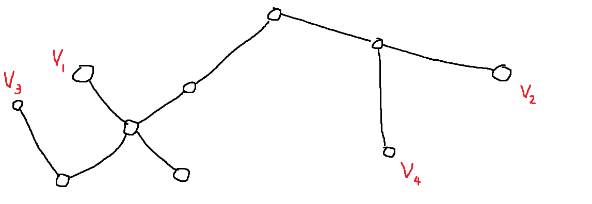

n개의 점으로 이루어진 트리가 있다. 이 트리의 정의는 다음과 같다.
- 어떤 두 점 사이의 거리는, 두 점을 잇는 경로 상 간선의 개수로 정의합니다.
- 임의의 3개의 점 a, b, c에 대한 함수 f(a, b, c)의 값을 a와 b 사이의 거리, b와 c 사이의 거리, c와 a 사이의 거리, 3개 값의 중간값으로 정의합니다.
주어진 트리에서 임의의 점 3개를 뽑아서 만들 수 있는 f값 중에서 제일 큰 값을 구하라.
입출력 예
| n | edges | result |
| 4 | [[1,2],[2,3],[3,4]] | 2 |
| 5 | [[1,5],[2,5],[3,5],[4,5]] | 2 |
코드
#include <queue>
#include <vector>
using namespace std;
int n;
vector<vector<int>> adj;
vector<int> mdvv;
pair<int,int> BFS(int sv) {
int mv = 0, md = 0;
vector<bool> visited (n+1);
mdvv.resize(0);
queue<pair<int,int>> q;
q.push({sv,0});
visited[sv] = true;
while (!q.empty()) {
int v = q.front().first;
int d = q.front().second;
q.pop();
if (d > md) {
mv = v;
md = d;
mdvv = {v};
}
else if (d == md) mdvv.push_back(v);
for (int nv = 0; nv < adj[v].size(); nv++) {
if (!visited[adj[v][nv]]) {
visited[adj[v][nv]] = true;
q.push({adj[v][nv],d+1});
}
}
}
return {mv,md};
}
int solution(int _n, vector<vector<int>> edges) {
n = _n;
adj.resize(n+1);
for (int i = 0; i < edges.size(); i++) {
adj[edges[i][0]].push_back(edges[i][1]);
adj[edges[i][1]].push_back(edges[i][0]);
}
pair<int,int> v2 = BFS(1);
pair<int,int> v3 = BFS(v2.first);
if (mdvv.size() >= 2) return v3.second;
pair<int,int> v4 = BFS(v3.first);
if (mdvv.size() >= 2) return v4.second;
else if (mdvv.size() == 1) return v4.second - 1;
return -1;
}
풀이
트리의 지름은 트리에 있는 두 점 사이의 거리 중 최대값이다.
임의의 점 3개를 뽑아 만들 수 있는 중앙값을 식으로 세우면 다음과 같다.
f(a,b,c) = median(d(a,b),d(b,c),d(c,a))
트리의 지름을 D라고 하자. a,b를 지름의 양끝에 있는 점이라고 하고 a,b에서 인접한 점을 c라 하면 f(a,b,c)는 최소 D - 1이다. 트리의 지름이 될 수 있는 점이 두 개 밖에 없다고 가정하면, 세 점의 거리는 항상 (1, d-1, d)가 될 수 밖에 없기 때문이다. 그리고 f(a,b,c)는 D보다 클 수 없으므로 f(a,b,c) = D가 가능한 지를 알아내면 된다. 지름인 점이 두 개 이상일 때 f(a,b,c) = D가 가능하다.
예제

- v1과 가장 먼 점은 v2 또는 v4이다. 둘 중 아무 점을 택한다. v2로 정해 보자.
- v2에서 가장 먼 점은 v3이다. 이 때 거리는 6이고 동일한 거리를 가진 다른 점이 없으므로 다른 가장 먼 점을 찾아봐야 한다.
- v3에서 가장 먼 점은 v2 또는 v4이다. 지름인 점이 두 개이므로 f(v2,v3,v4) = 7이고 이는 트리의 지름이다.
참조